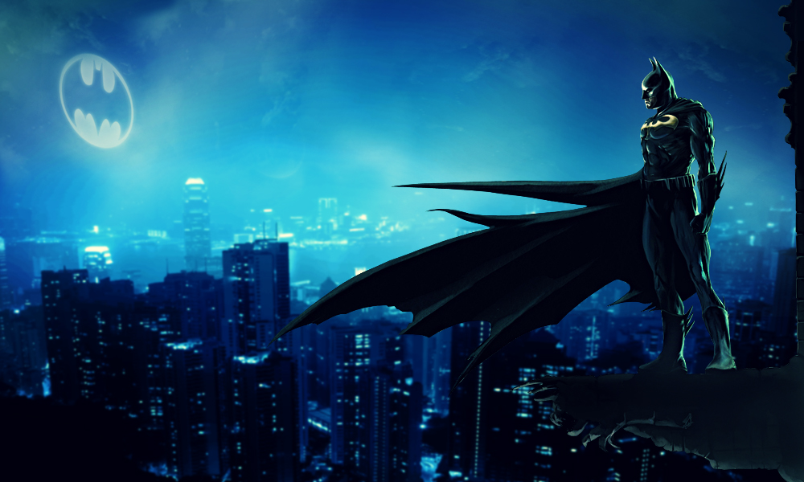

About Batman
Batman[a] is a superhero appearing in American comic books published by DC Comics.In the DC Universe continuity, Batman is the alias of Bruce Wayne, a wealthy American playboy, philanthropist, and industrialist who resides in Gotham City. Batman's origin story features him swearing vengeance against criminals after witnessing the murder of his parents Thomas and Martha as a child, a vendetta tempered with the ideal of justice. He trains himself physically and intellectually, crafts a bat-inspired persona, and monitors the Gotham streets at night.
Batman's Characteristics
- he's strong
- he's fearless
- he's got the greatest butler ever
Emenies of Batman
Batman's made a few enemies along the way to clean out Gotham. Here they are